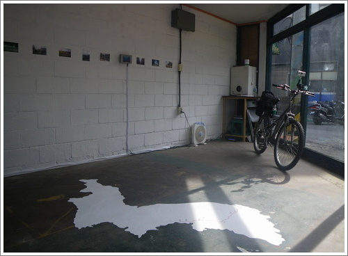
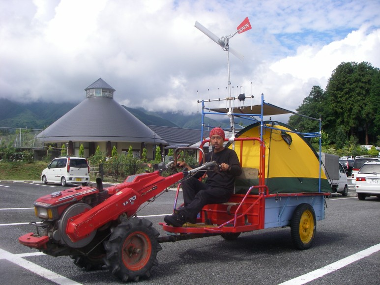

鈴木勲
스즈키 이사오
TAP2005/2007 참가
 
1969년 동경출생.
1993년 타미미술대학 회화과 유화전공 졸업.
여행과 에콜로지를 미술작품으로 가시화히는 작업을 하고 있다.
작년, eco japan cup 2007 컬쳐부문에서 eco art 그랑프리를 수상했다.
현재, 폐플라스틱유화연료의 모펫트바이크로 에콜로지컬 일본 횡단 여행 중.
2008-07-03
saptap.egloos.com 에서 옮김